CS184/284A Spring 2025 Homework 3 Write-Up
Link to webpage: (TODO) cs184.eecs.berkeley.edu/sp25 Link to GitHub repository: (TODO) cs184.eecs.berkeley.edu/sp25

Overview
Give a high-level overview of what you implemented in this homework. Think about what you've built as a whole. Share your thoughts on what interesting things you've learned from completing the homework.Part 1: Ray Generation and Scene Intersection
Ray Generation
To actually ray trace anything, we first need to be able to generate camera rays.
These rays will sample the scene and correspond to the pixels they pass through on the screen.
For the implementation, we begin with the generate_ray function, which takes in normalized screen coordinates (x and y).
Note that these coordinates are independent of the render's field of view (FOV) and range from 0 to 1, so we need to convert them to something more useful.
To do this, my implementation begins by converting the FOV parameters to distance units on the camera's sensor plane.
Specifically, I calculate the tan of half of each axis' respective FOV parameter.
Since the camera is located a distance of 1 away from the sensor plane, the tan calculation yields the x/y-offset on the sensor plane for any input angle.
Dividing the FOV parameter by 2 gives us the maximum x/y-offset off either 'side' of the camera.
In other words, this calculation gives us the absolute value of the maximum x/y extents of any possible sample location on the sensor plane.
With these extents in hand, we can calculate the sensor plane coordinates of the screen point as a simple linear interpolation.
For the x-axis, if we call the absolute extent 'a'', the calculation is as follows:
\[x_{sensor} = -a + (2 * a * x_{input})\]
The y axis calculation is the same, though it uses its own extent and input values.
We know the z-coordinate will be -1, since this is the definition of the sensor plane.
Thus, we have the sensor coordinates of our chosen point.
To generate the direction of the world-space ray, we treat the sensor coordinate as a vector, find its unit direction, and convert it to world-space using the camera's camera-to-world matrix.
Finally, we return a ray with this direction originating from the camera's position.
To complete the walkthrough of ray generation, I'll cover how the above ray generating process is used to actually sample the scene and obtain pixel colors.
To start, say we want to sample the scene for the pixel at \(x,y\).
This gives us a pixel coordinate value, with x being between 0 and the screen's width in pixels, and y being between 0 and the screen's height in pixels.
However, while these coords define a point, the pixel actually covers an area of the scene.
Thus, we should be able to aim the sampling ray at any point in this area.
To choose a point within the pixel's area, we take a uniform random sample over a unit 1x1 area and add it to the pixel coordinates.
Finally, we normalize the new coordinates by dividing x by the screen's width, and y by the screen's height.
This gives us an \(x,y\) pair we can pass into generate_ray to sample the scene for a given pixel.
Primitive Intersection
The next functionality we need to implement ray tracing is to be able to determine the first surface struck by a given ray.
At this stage, all we can really do for ray-primitive intersection is iterate over every primitive in the scene and check if each one intersects the ray.
As we iterate over the primitives, we update the max_t field of the ray to be that of its earliest known intersection.
Then, after we've covered every primitive, we return whichever has the smallest \(t\) value, indicating it is the closest.
This is functional for small scenes with relatively few primitives, though it does not scale to larger scenes.
For my triangle intersection implementation, I used the Möller-Trumbore algorithm discussed in class to first obtain the barycentric coordinates of the ray's projection onto the triangle's plane. Admittedly, I don't have a good, intuitive explanation for how the Möller-Trumbore algorithm works beyond the derivation performed in discussion. I've reproduced the general steps of this derivation below:
TODO - MOLLER TRUMBORE
Note that the Möller-Trumbore algorithm also gives us the \(t\) value for the ray's intersection with the triangle's plane.
This is used to determine if the intersection falls within the ray's min_t and max_t, and we discard intersections that fail this condition.
With the 2 barycentric coordinates, we can determine if the projected point lands within the triangle or not.
The third barycentric coordinate is derived by subtracting the 2 given coords from 1.
Then, if all of the barycentric coords fall between 0 and 1, we know the ray intersects the triangle and can fill out the intersection information.
Otherwise, they don't intersect.
Part 2: Bounding Volume Hierarchy
To improve upon the naive full-scene intersection scan in the previous part, we need a new data type for organizing the scene's primitives.
For this project, we'll use a Bounding Volume Hierarchy (BVH) with axis-aligned bounding boxes.
To construct the scene BVH, I opted to use a recursive function which splits the existing set of objects into two subsets, until the input consists of at most max_leaf_size primitives.
The algorithm for this function begins by iterating over the provided set of primitives, expanding a bounding box to include each encountered primitive.
Once the iteration is completed, we have a bounding box that encompasses every primitive in the intial set, which is assigned to the current BVH node.
Additionally, during this iteration, the algorithm calculates the maximum and minimum centroid coordinates along each axis, which will be used later.
Next, we want to choose a scheme that divides the set of primitives into two sets of roughly equal size. For this implementation, I opted to use the axes extents from the first iteration to choose a dividing axis. The dividing axis is chosen by selecting the axis with the greatest range between its maximum and minimum centroid coordinates. Then, the midpoint of the range along this axis is used to sort the primitives into two subsets. While this won't always give a perfectly balanced split, it works reasonably well, and runs in linear time with little memory overhead. One advantage of this approach is that outliers are quickly placed into their own bounding box, reducing the amount of empty space in future bounding boxes and thereby improving intersection testing. However, constraining the algorithm to axis-aligned splits means we might miss out on splits that more evenly divide the set.
Once the midpoint is calculated, the algorithm finishes by iterating over the primitives once more, this time assigning each a subset based on the centroid's relation to the axis midpoint. Primitives with centroids having a coordinate along the chosen axis that is less than the midpoint are assigned to the 'left' subset, while the rest go to the 'right' subset. This leaves us with two sets, on which we recursively call the function. Since we use the maximum range to chose an axis, and the average of the range to divide the axis, we should always have at least 1 primitive in each set, assuming centroids don't overlap. This means the recursion eventually ends, as we never produce an empty subset when splitting.
TODO: BVH iterators?
Bounding Volume Hierarchy - Examples
|
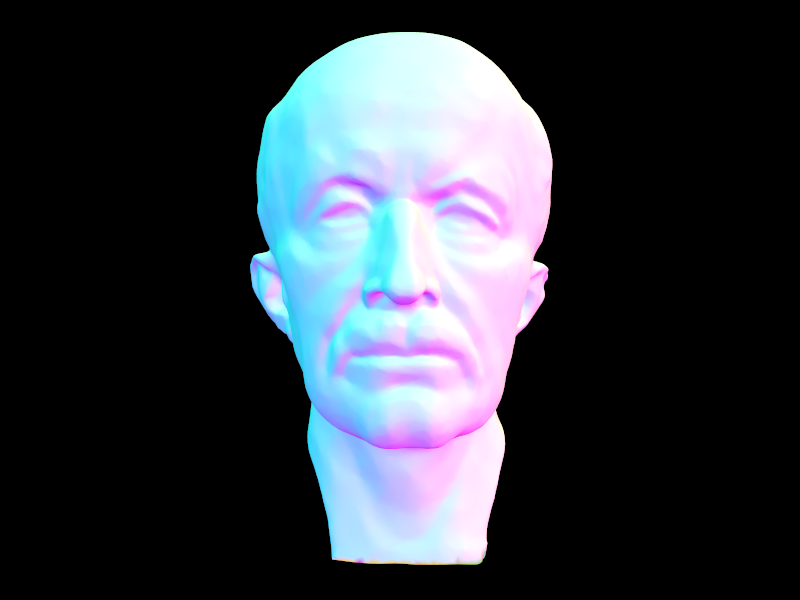 |
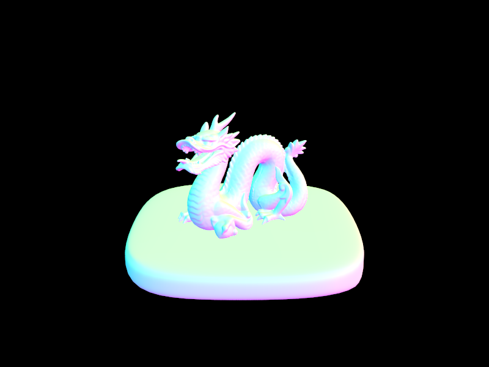 |
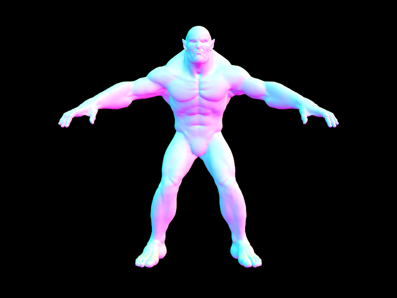 |
Bounding Volume Hierarchy - Runtime Comparison
|
|
Part 3: Direct Illumination
To implement direct illumination, we may consider several potential sampling implementations. These determine the directions in which we'll send secondary bounce rays when evaluating the radiance at a point. Two such implementations are detailed below:Hemisphere Sampling
For hemisphere sampling, we simply send rays out from the initial hit point in directions distributed uniformly over a hemisphere aligned with the surface normal.
My implementation begins by determining the hit point from the ray and intersection information provided to the estimate_direct_lighting_hemisphere function.
I also calculate a transformation matrix which takes coordinates from world space to a space with the Z-axis aligned with the hit surface's normal, henceforth known as 'object space'.
Lastly, the object-space outgoing direction is calculated by inverting the incident ray's direction, and applying the previous matrix.
With the initial calculations completed, my implementation proceeds by iterating over the following steps until num_samples samples are taken.
First, an incoming direction is chosen.
To sample directions uniformly over the normal-aligned hemisphere, hemisphereSampler's get_sample() function is used.
This function works by selecting a phi between 0 and 360 degrees, with a uniform distribution, and a theta betwen 0 and 90 degrees, with a cosine distribution.
These angles are then converted to a unit vector, and used for the rest of the algorithm as 'w_in', the sampled incoming direction.
The probability density function for this sampling method is a uniform \( 1/(2*\pi) \), since the solid-angle area of a hemisphere is \(2*\pi\) steradians.
This PDF is referred to as pdf in the reflection equation.
Next, we use the intersection information from the initial ray (outgoing, by our conventions) to sample the surface's Bidirectional Scattering Distribution Function (BSDF) with our outgoing and incoming directions.
This function determines how the incoming colors of light will be reflected along the outgoing ray.
Here, we must divide the result by \(\pi\) to produce a term I'll refer to as f in the rest of this explanation.
While I provide a full explanation in its own section, the additional \(\pi\) term converts the BSDF of the surface to a Bidirectional Reflection Distribution Function (BRDF), which is expected by a later equation.
The last value we need before plugging everything into the reflection equation is the actual radiance of the surface 'producing' the incoming ray.
This is found by constructing a ray originating at the hit point with a direction determined by converting the sampled incoming direction back to world space.
To prevent this new ray from intersecting the reflecting surface, we assign it a min_t value of EPS_F.
This ray is then tested against the scene's primitives, and, if it intersects any of them, we evaluate its zero-bounce radiance and proceed with the relfection equation.
The indivdual terms of the sum are calculated using the following equation, which is itself a portion of the Monte-Carlo approximation of the reflection equation: \[\frac{(f * zero\_bounce\_radiance * cos(\theta_{w\_in}))}{pdf} \] Note that \(\theta_{w\_in}\) is taken in object-space, with respect to the z-axis. The algorithm then adds the result of this equation to a running total of all sample radiances. Once all samples are taken, the total radiance is divided by the number of samples to get the average result. This is then returned by the function.
Light Sampling
Light sampling mostly follows the above hemisphere implementation, with a notable exception in how it chooses incoming directions. Thus, I'll just be focusing on these differences. For this sampling method, we only sample directions which point towards a light in the scene. Since all other directions can't contribute to the radiance sum without additional bounces, this sampling method is much more efficient than hemisphere sampling when producing comparable results.
To incorporate these changes into the above hemisphere sampling algorithm, we begin by replacing the fixed-count sample iteration with an iteration over the scene's light sources.
Each of these sources are sampled up to ns_area_light times, though point lights are only sampled once and given a proportional weight increase in the average, as they can only produce 1 result.
For each of the inner iterations, we choose w_in using the light's sample_L function.
Here, sample_L gives us a distribution of incoming directions over the light's surface.
This function also gives us the zero-bounce radiance of the light, and the pdf value associated with w_in, which are used in the reflection equation as before.
However, this function doesn't check for scene intersections, so we still need to perform our own check and discard the sample if something is blocking the light source.
This check calculates the incoming ray exactly as in the hemisphere sampling case, though it does have a early exit for light sources behind the reflecting surface.
The early exit is checked by calculating the dot product of w_in and the incoming ray's direction.
If the product is less than zero, the sample contributes zero to the sum, and is skipped.
From here, we simply apply the reflection equation using the BRDF of the reflecting surface. Again, we find the BRDF by dividing the surface's BSDF sample by \(\pi\). Then, once the aggregate radiance is computed, we divide by the total number of samples, and return the result.
BSDF vs. BRDF
Figuring out why the the division by \(\pi\) needs to occur took significant effort on my part, as I feel 'what' a BSDF is and how it relates to the BRDF could've been explained/hinted at better. I initially stumbled upon the term after trying to make my own over-exposed results look like the provided examples. While this produced good results, I still wanted a mathematical explanation. Thus, I began by determing the units of the BSDF and how they compared to the BRDF's own units. As it turns out, assuming the BSDF shares its units with reflectance, which is the specified return value, the BSDF and BRDF have different units. Per Wikipedia's definition of reflectance (SOURCE?), the BSDF is a ratio of radiances, while the course slides specify the BRDF as being a ratio of outgoing radiance to incoming irradiance. Writing out the relationship between irradiance and radiance, we have: \[E = \int_S L \cdot \cos(\theta) d\omega\] Thankfully, due the the assumption that our surfaces are Lambertian, \(L\) is constant, and we just have to integrate cosine over a unit sphere. This yields \(E = \pi \cdot L\), explaining the extra \(\pi\) term.Direct Illumination - Hemisphere vs. Importance Sampling
All images were rendered with 32 light rays.
|
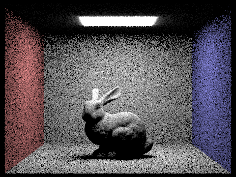 |
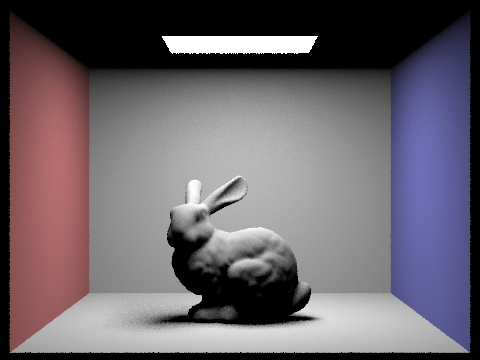 |
|
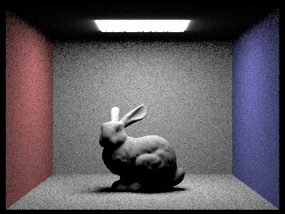 |
|
|
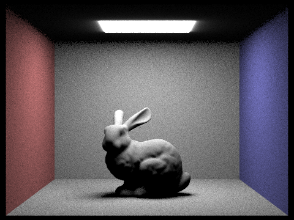 |
|
|
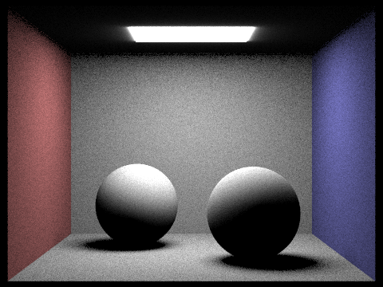 |
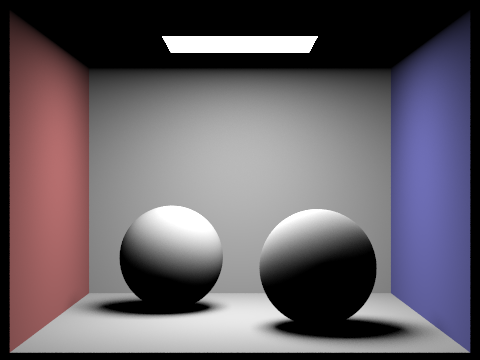 |
Based on the above results, it seems that, for the same number of light samples, importance sampling produces renders with much less noise than uniform hemisphere sampling. Indeed, even with as few as 4 samples per pixel, the importance sampled image looks relatively noise-free. Contrast this with the hemisphere sampled image, which presents a lot of visual noise with even 16 samples per pixel.
Direct Illumination - Importance Light Sampling Results
|
|
|
|
|
|
Part 4: Global Illumination
Most of the global illumination implementation takes place in the at_least_one_bounce_radiance function.
This function takes in a ray along with its intersection data, and calculates the result of max_ray_depth bounces of light.
First, the function calls one_bounce_radiance to sample the one-bounce radiance at the hit point on the reflecting surface.
This gives us the direct lighting for the hit point.
Next, we need to pick a direction for the next bounce sample, w_in.
This is done by calling sample_f on the reflecting surface's BSDF, which gives us an incoming direction
This function call also returns the BSDF value for the reflecting surface, and the PDF value for the direction sample, both of which we store for later.
Though, before saving the BSDF's value, we divide the it by \(\pi\) to produce a BRDF result, labeled f.
We can now setup the next ray for a recursive call to at_least_one_bounce_radiance.
This ray will originate at the hit point, and head in a direction determined by w_in transformed to world-space, since sample_f produces an object-space direction.
We define world-space and object space as in Part 3, and use the same normal-aligned z-axis definition for the transformation matrix.
To ensure that recursive eventually terminates, we assign the next ray a depth one less than the depth of the current iteration's ray.
Finally, to prevent the next ray from hitting the reflecting surface, we assign it a min_t of EPS_F.
The algorithm is now ready to make the recursive at_least_one_bounce_radiance call.
However, we only recurse if the 'next' ray's depth is greater than zero, since recursion means we'll cast rays one level deeper than the current 'next'.
If this condition is satified, the recursive call is made, and we calculate the bounce's contribution to the overall radiance using the reflection equation.
Since we're only dealing with one sample, we drop the summation in the equation.
Additionally, \(\cos(\theta)\) is instead calculated as the dot product of world-space w_in and the initial intersection's normal.
Thus, the final equation is as follows:
\[\frac{f * at\_least\_one\_bounce\_radiance * (w\_in_{world} \cdot norm_{surface})}{pdf} \]
Once calculated, the result is added to the direct lighting result and returned.
If isAccumBounces is false, just the indirect result is returned.
Global Illumination - Gallery
|
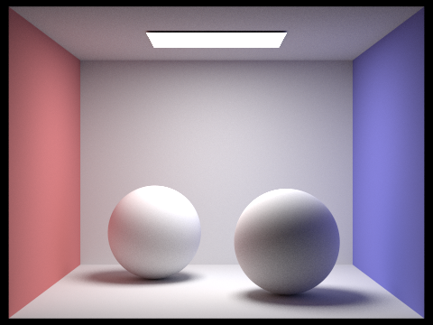 |
|
Global Illumination - Direct vs. Indirect Renders
|
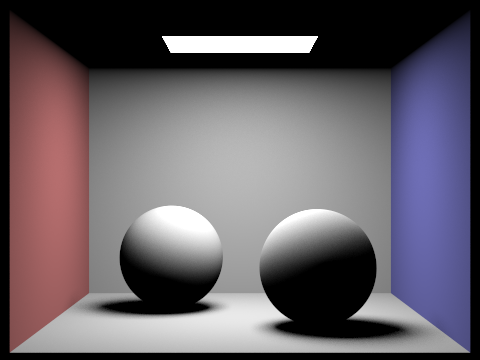 |
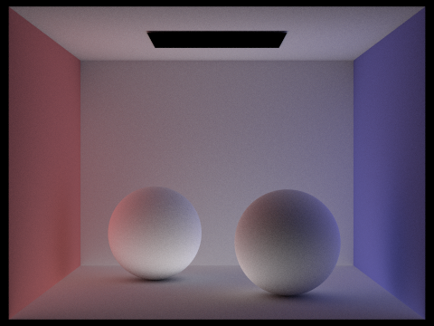 |
Global Illumination - Depth Renders
|
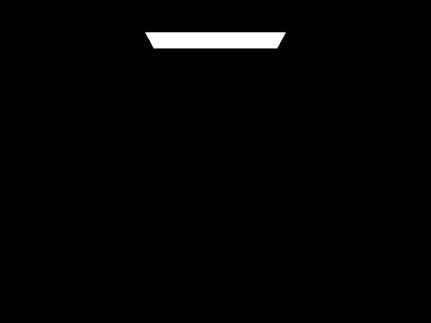 |
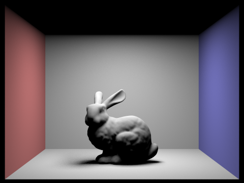 |
|
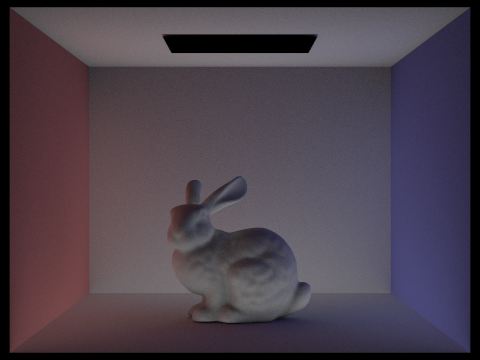 |
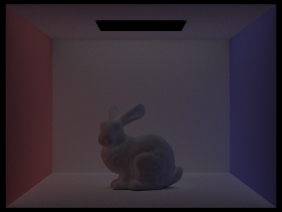 |
|
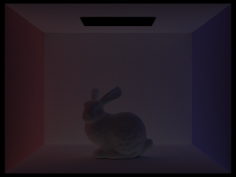 |
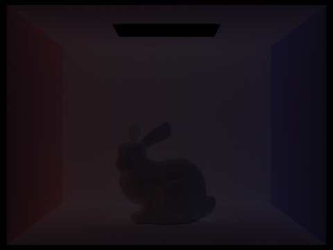 |
Global Illumination - Accumulated Renders
|
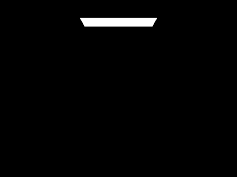 |
|
|
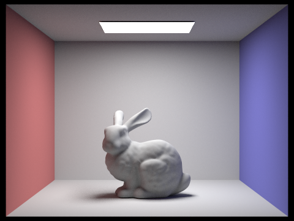 |
|
|
|
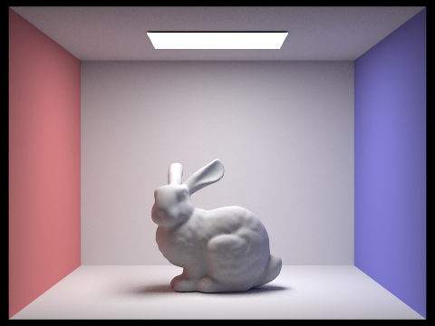 |
Global Illumination - Russian Roulette
|
|
|
|
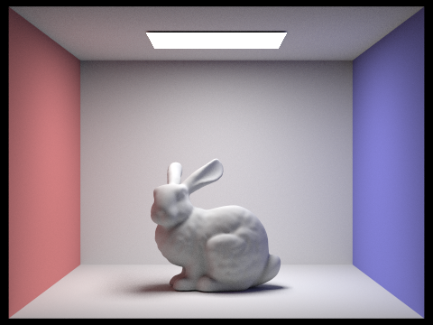 |
|
|
|
|
Global Illumination - Sample rates with 4 light rays and max depth 100
|
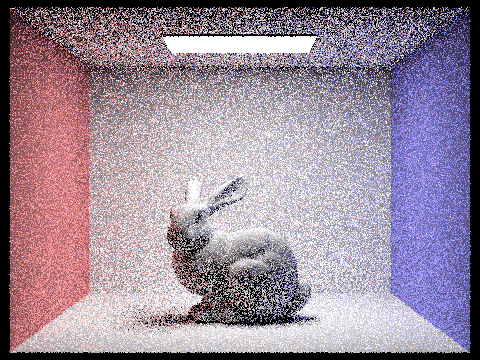 |
|
|
|
|
|
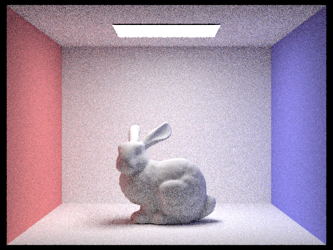 |
|
|
|
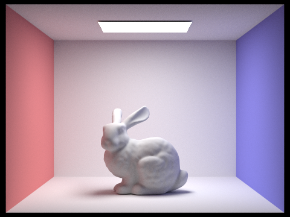 |
Part 5: Adaptive Sampling
From the previous part, we can clearly see that more samples can greatly reduce the noise present in a render. However, naively increasing the per-pixel sample rate for the entire image results in slow render times. To avoid unecessarily sampling pixels that quickly converge, we have adaptive sampling.
Adaptive sampling works by using statistics to determine which pixels have sample values that are converging quickly. Instead of applying the maximum number of samples to these pixels, adaptive sampling stops sampling a pixel once the samples have achieved the desired confidence interval. Note that we still stop at the given maximum number of samples in the case the samples don't converge in time. Thus, adaptive sampling allows us to 'save' samples on pixels that converge quickly, while still applying a full sampling pass to more complicated pixels.
For my implementation, I used the following criteria for convergence:
\[1.96 \cdot \frac{\sigma}{\sqrt{n}} \leq 0.05 \cdot \mu\]
Where \(\sigma\) and \(\mu\) are the standard deviation and average, respectively, of the samples so far.
Also, \(n\) is the total number of samples taken so far.
For the rest of this explanation, I'll refer to \(1.96 \cdot \frac{\sigma}{\sqrt{n}}\) as \(I\).
This implementation builds off the raytrace_pixel function.
In addition to the radiance sum, we'll now track the sum of sample illuminances and the sum of the squares of sample illuminances.
I'll label the former illSum, and the latter, illSqrSum.
These will be used to the check the convergence criteria periodically.
Instead of checking convergence with every sample, which would be inefficient, the convergence check only occurs once for every samplesPerBatch samples.
Though, we do update illSum and illSqrSum with each sample, using the illum() function on the sample's radiance to get the sample's illuminance.
When we do check convergence, the calculations are performed as follows:
\[\mu = \frac{illSum}{n}\]
\[\sigma^2 = \frac{1}{n-1} \cdot \left(illSqrSum - \frac{illSum^2}{n}\right)\]
\[I = 1.96 \cdot \sqrt{\frac{\sigma^2}{n}}\]
Then, the condition is checked using these values.
If the convergence check passes, the loop responsible for sampling the pixel breaks, and the actual number of samples taken is recorded in sampleCountBuffer.
|
|
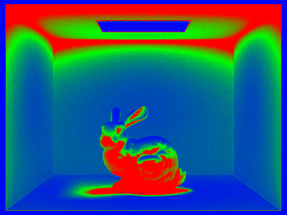 |
|
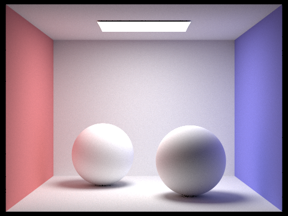 |
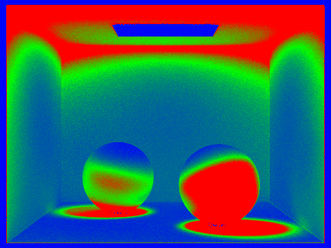 |
|
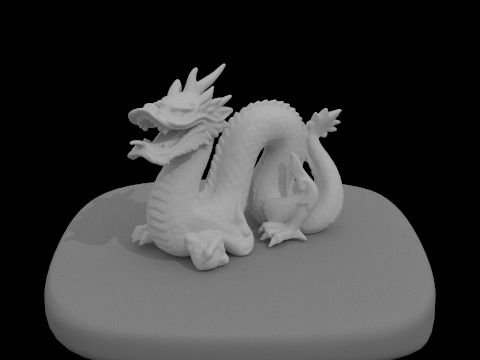 |
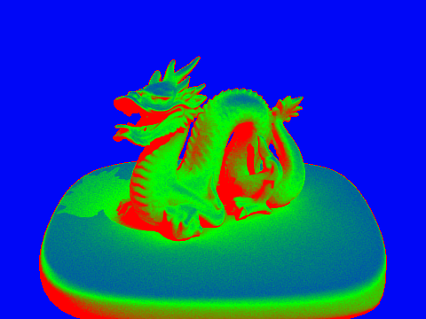 |